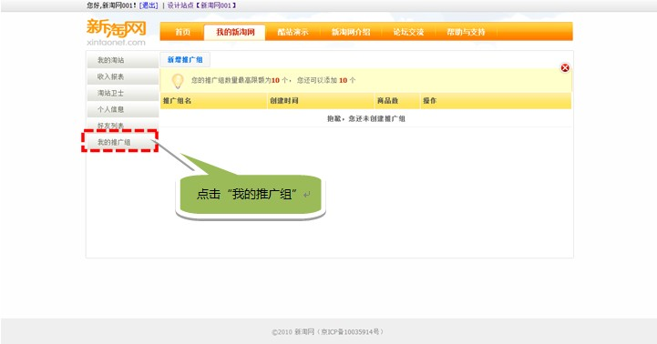
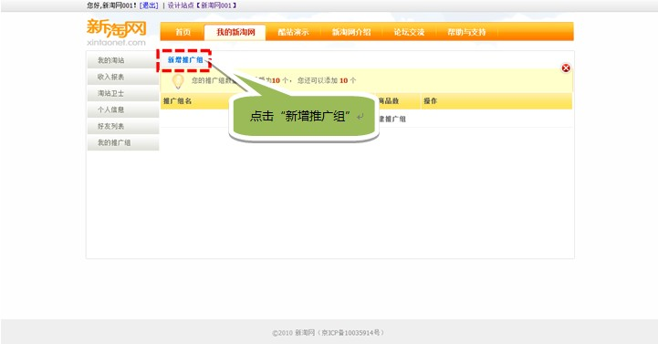
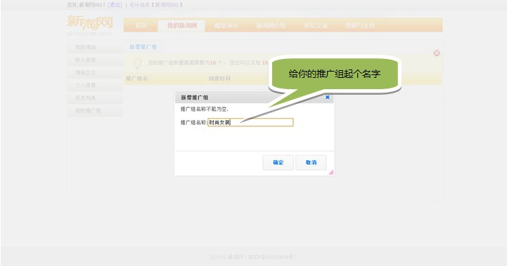
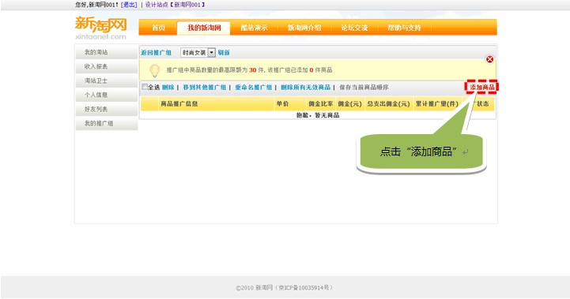
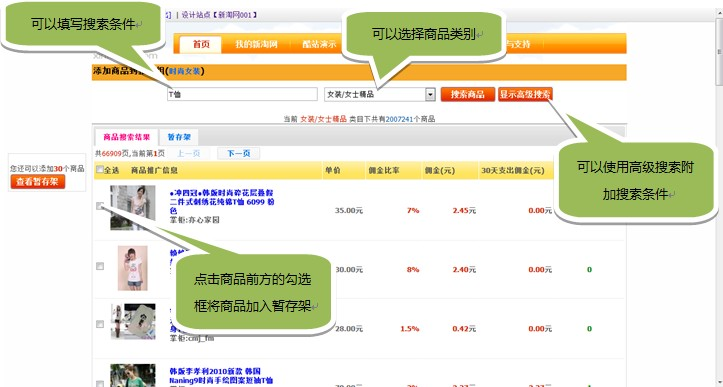
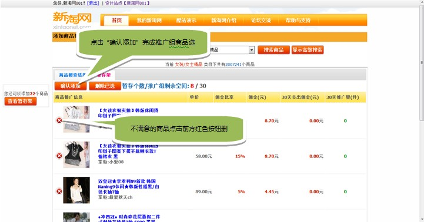
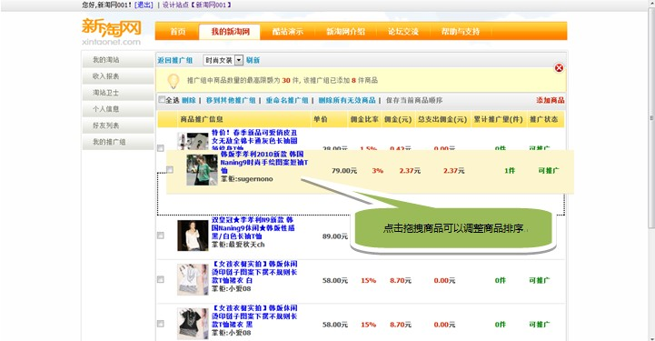

| 什么是推广组？ 推广组概念源于阿里妈妈，在阿里妈妈中淘宝客可以选择很多想要推广的商品，推广组的出现就是为了便于对这些商品的统一/分组管理。 在新淘网，当你登录后，在个人信息中可以找到“我的推广组”，在这里，你可以更直观更便捷的创建推广组并加入想要推广的商品，接下来，让我来告诉你怎么建立一个属于你的推广组。 创建推广组： 第一步：  第二步：  第三步：  到这里推广组就创建成功了，看，是不是很简单？ 添加推广组商品： 第一步：  第二步：  第三步：  第四步： 在推广组中拖拽某件商品上下移动可以更改推广组商品排序，更改之后点击页面上的“保存当前商品排序”。 推广组中的商品排序会影响到商品在组件中的显示，比如，推广组中有30件商品，组件中有9个展示位，那么只有前9件商品会在推广组中直接显示，剩余商品需要点击组件右侧的“更多”来查看。  |
| Converted from CHM to HTML with chm2web Pro 2.84 (unicode) |